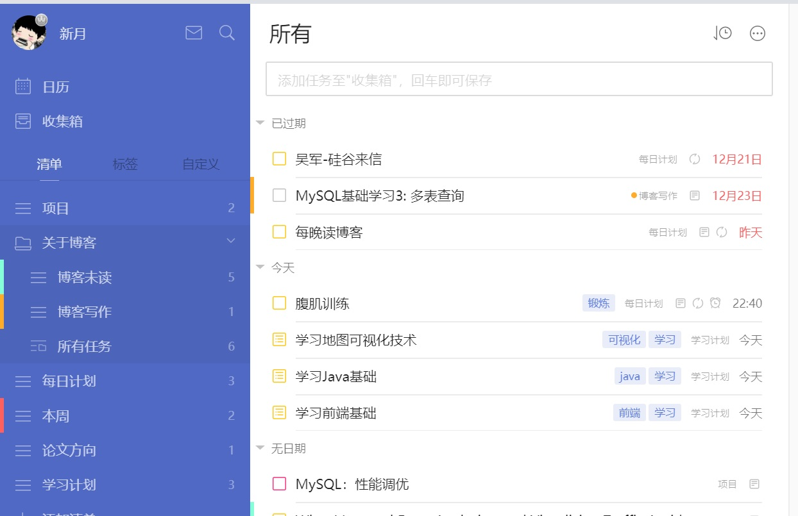
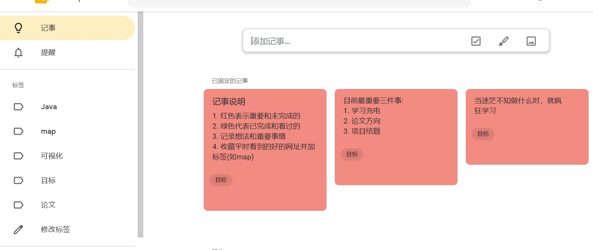

在2018年最后的几个小时里，我也总结一下自己在这一年里所做的主要事情，回顾一下自己一路的成长以及做这些事情对我的意义和收获，自己未来还需要做怎样地改进等等。
初入项目
我在大二大三时做过学校的创新项目，可能是意犹未尽，也可能是喜欢做项目过程中解决问题的过程以及对自己代码能力的锻炼，总之，自己心里一直对做项目充满期待，希望有一天也能独立负责一个项目。怀着这样的心情，当老师问我未来研究生道路选择时，我在项目和论文之间选择了项目。
这个项目主要是基于Web的交通事故数据分析项目，我主要负责后台部分以及地图绘图部分，主要使用的语言为Java，以及需要在MySQL数据库上进行一些操作。在此之前，我主要是使用C++做过一些东西，基本没怎么用过Java，通过这个项目，我开始边做边学Java以及数据库相关的知识，渐渐对其产生了兴趣，逐渐从C++开始转到Java，也明确了今后未来的工作方向。
当时做这个项目主要是老师说一个功能，然后我去实现，可能是自己从来没接触过相关的内容，自己回过头来看这个项目时，发现自己当时只是应付实现老师说的功能，没有调研和考虑可以加入一些好的技术，只是采用最笨最原始的方式实现，代码组织的也比较混乱。现在觉得，自己不管是在做项目还是做其他事情的过程中，不应该只满足于最基本的要求，还应该自己深入思考，将其做到极致，将自己所学的一些东西给运用进去。
希望2019对这个项目进行重构，加入一些所学的新的框架，以及挖掘项目中的难点进行优化（如大数据量查询优化），这样才算真正没有浪费之前的时间，才算是真正做了项目，将来在面试时项目准备也会比较好。
我的博客之路
在之前虽然也想过写博客记录一些学习笔记等，但总是不够坚持，或者总是有一种完美主义，每次都想写的很详尽很好，导致写了几篇后就基本断掉了，对写博客还是有一种不自然和畏惧心理。
研一上学期以来，自己调整了心态，摒弃了完美主义，写博客的目的很单纯，就是在记录自己的学习中遇到的问题和技术的同时，其他朋友看了也能有一些启发和帮助就更好了。现在基本每周至少更新一篇博客，包括学习笔记，项目中遇到的问题以及一些技术工具的介绍等。由于自己实力还不够，还不能够对某个技术点进行深入剖析，等到以后有积累了再写这方面的文章。
现在自己主要是在自己的博客网站和CSDN上写博客，到现在csdn上也算是有二十多篇原创文章了，希望后面自己能够在这方面继续坚持。这也算是我的2018的另一个收获了。
我的计划管理
在最近，我逐渐开始明白目标计划和时间管理的重要性，于是我开始学习了GTD时间管理方法，并逐渐开始采用一些好用的软件来进行管理。
我开始列出我在这一阶段所要达成的大目标，根据大目标将其分解成一个个的具体可执行的小任务和计划，再根据这些安排每周和每天所要做的具体事情，这样一来，自己做事情就会很明确，知道这个时间点自己该做什么事，还有哪些未完成，就不会在某些时间无所事事，同时将自己的大脑清空去专心做眼下的事情。
我使用的软件主要是滴答清单，可以根据任务不同创建不同的清单，还可以创建每周和每天的任务。

同时，我也会使用keep记录下自己的临时的想法和灵感：

使用印象笔记来收藏一些好的网页文章等，有道云笔记记录自己的学习笔记。
这也是我2018一个比较大的收获，开始学会怎样更高效地学习和工作，怎样做好自己的计划管理。
业余爱好
除了学习的事情之外，我也开始尝试培养自己的一些爱好和好的习惯。由于自己之前一直对乐器之类的比较感兴趣，于是在2018年开始用自己的空余时间学布鲁斯口琴，选择这个的原因主要是携带简单，噪声不大，比较喜欢口琴的这种淡淡的忧伤这种声音。但之前因为种种原因，有一段时间没练了，希望在2019年即时学习上的事情再忙，也要挤出时间来练习，也算是作为自己减压的一种方式。
另外，我也开始注重对身体的锻炼，毕竟身体才是革命的本钱，现在每天晚上回去在跟着keep上的训练计划进行锻炼。刚开始可能会比较吃力，希望自己能够一直坚持，达到自己想要的结果。
2018，我也开启了自己的阅读计划，在微信读书APP上读一些比较好的书籍，并做读书笔记和写下自己的感悟，目前在读的书有《异类》《明朝那些事儿》等，希望能够开拓自己的视野，不仅仅局限于本专业范围内。
我的2019展望
我们总是高估一个月所能做的事情，低估一年所能达到的目标。在即将到来的2019年，为自己写下一些未来的承诺和期许：
1.继续完善和坚持2018所坚持的事情
2.调整心态，多从自己身上找原因
3.珍惜在校学习的时间，打好基础
4.以论文为主，达到毕业要求
5.坚持坚持再坚持，克服克服再克服
期待2019遇见一个更好的自己！